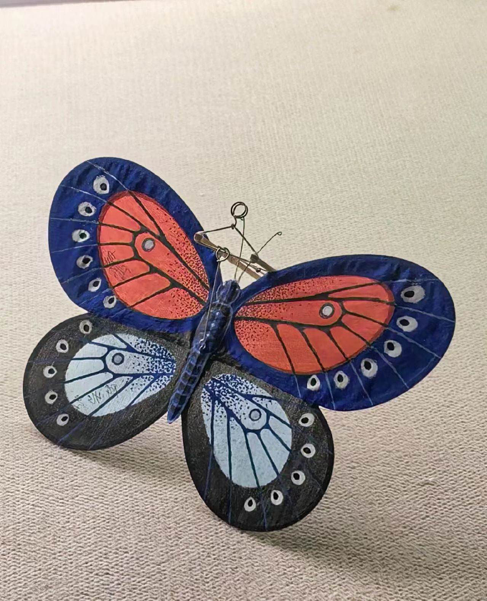
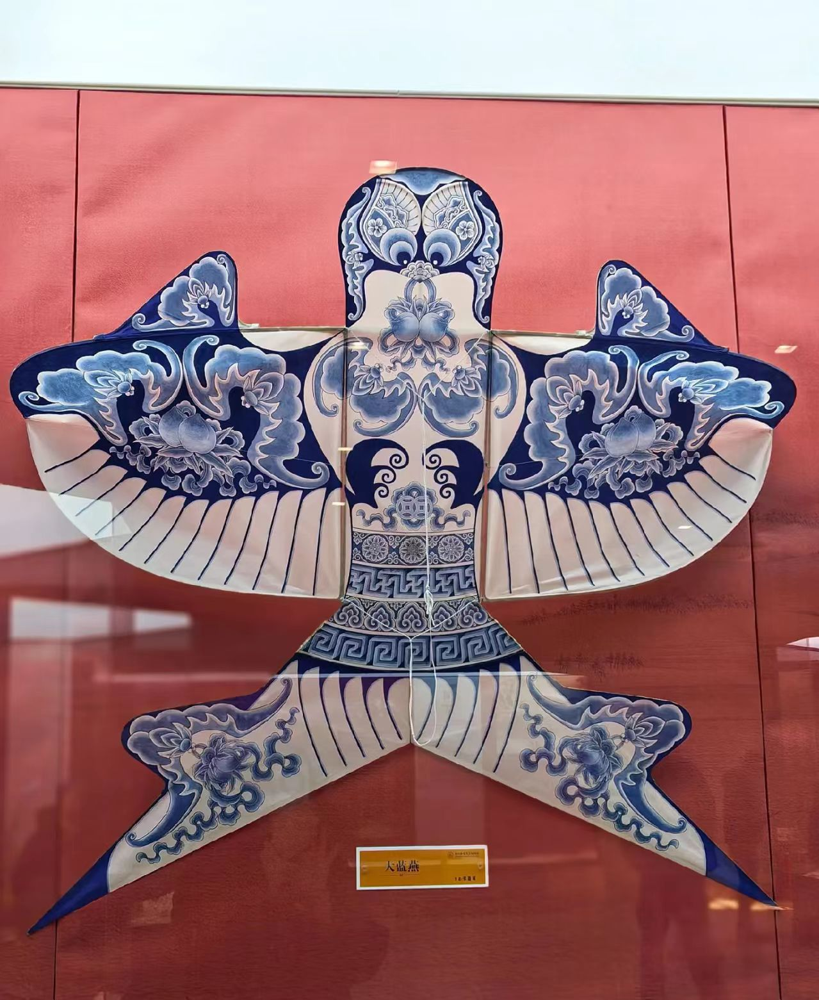
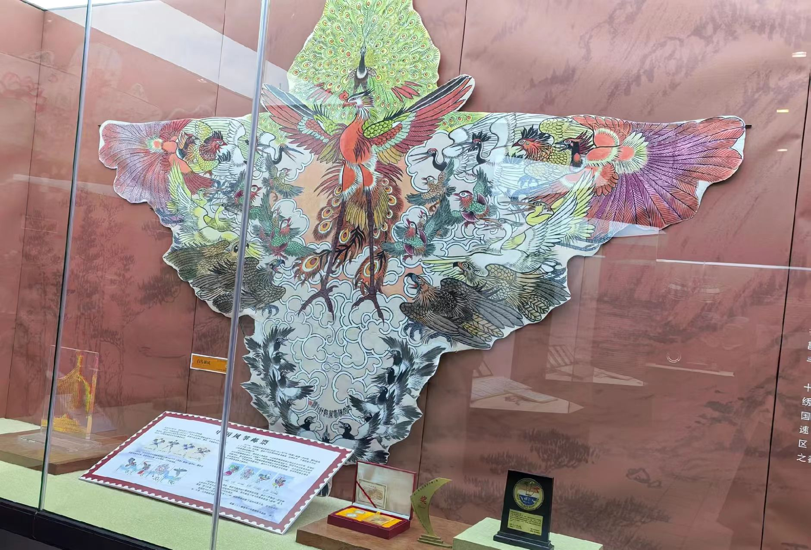
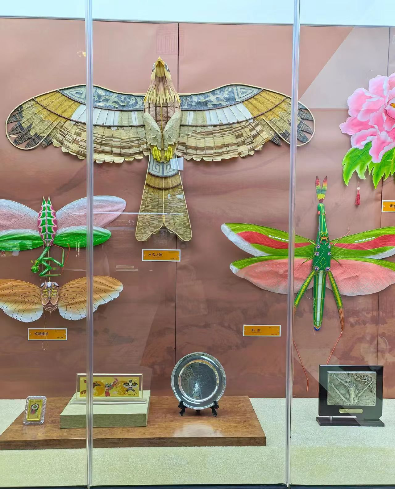

📸 主图介绍
经典传统潍坊沙燕风筝作品，精选竹条扎制骨架、宣纸手绘吉祥纹样，平衡力学工艺成熟，是北方风筝代表样式。古人春日踏青放风筝寓意放走晦气、祈求全年平安顺遂，自古便是大众喜爱的户外民俗项目。
传统风筝精品作品数字画廊




🖼️ 四幅作品数字化解析
四张图片完整覆盖风筝四大创作赛道：传统民俗沙燕、古典戏曲人物、多层立体造型、现代国潮文创。横向对比直观展示南北风筝工艺差异：北方骨架厚重、造型大气；南方轻薄精巧、彩绘细腻，完整呈现风筝两千余年风格迭代。
💡 数字化收藏小贴士
传统竹骨绢面风筝极易受潮变形、虫蛀破损，高清扫描+矢量数字化存档可永久保存；手工古法扎制风筝收藏价值远高于工业量产款；现代轻量化复合材料、数字文创周边已解决传统风筝保存难、携带不便的行业痛点。
传统风筝
风筝古称纸鸢、风鹞，国家级非物质文化遗产，起源于春秋战国时期，距今已有两千五百余年完整传承脉络。早期为军事通讯信号工具，唐宋时期走入民间，演变为春日踏青标志性民俗，明清工艺走向巅峰，逐步分化北方厚重大气、南方轻薄精巧两大艺术流派，是兼具力学、绘画、手工技艺的综合型传统手工艺。
风筝完整遵循“扎、糊、绘、放”四大古法工序，仅依靠竹篾、宣纸、绢布、丝线基础材料，依靠空气动力学实现升空。创作题材包罗万象：瑞兽花鸟、历史戏曲、神话传说、现代国潮IP均可作为绘制载体。一纸竹骨乘风而上，承载中国人春日祈福、向往自由的浪漫民俗精神。
传统风筝行业数字化数据分析
全国风筝文化传承地域分布占比
风筝爱好者受众年龄分层调研数据
🪁 风筝千年文化内核与当代数字化价值
风筝是根植春日民俗的活态文化数字符号，清明、寒食踏青放风筝延续千年民俗习惯，民间普遍认为放飞风筝能够带走晦气、祈求四季平安。每类风筝纹样拥有专属吉祥寓意：燕子象征报春纳福、龙凤寓意国泰家和、蝴蝶代表美满如意。当下数字化全面赋能风筝产业：城市风筝文旅节、DIY线上手工课程、国潮风筝数字藏品、海外国风巡展同步落地，成为国风文旅标志性非遗IP。
🛠️ 全套古法扎制工具体系
去皮青竹篾、塑形酒精灯、蜂蜡粘合、半生熟宣纸、矿物国画颜料、耐磨放飞丝线、平衡配重、高清扫描设备、3D数字建模软件
🎐 南北两大艺术流派
北方风筝（潍坊/北京）骨架厚实、造型硕大、色彩浓烈；南方风筝（扬州/阳江）竹骨轻薄、多层镂空、工笔彩绘细腻雅致
📜 完整千年传承脉络
春秋战国军用起源→唐宋民间普及→明清工艺巅峰→近现代传承断层修复→当代文旅数字化创新发展
🌟 数字化创新应用场景
城市风筝文旅嘉年华、DIY手工体验工坊、线上美育课程、国潮文创周边、数字藏品、海外国风艺术巡展、户外亲子文旅项目
💬 用户数字化留言交流区